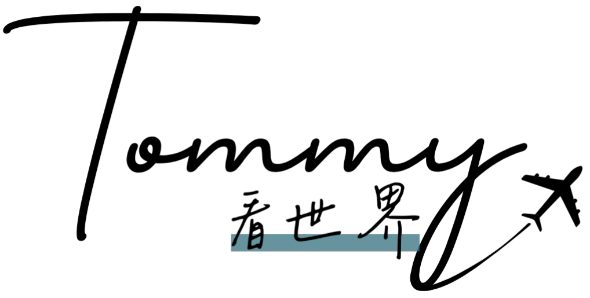

關於我
亞洲旅遊
中國
日本
新加坡
馬來西亞
泰國
印尼
越南
歐洲旅遊
英國
法國
荷蘭
比利時
盧森堡
瑞士
摩納哥
西班牙
葡萄牙
安道爾
丹麥
瑞典
波蘭
美洲旅遊
美國
加拿大
大洋洲旅遊
澳洲
非洲旅遊
南非
Tommy 在日內瓦
日內瓦 (Geneve)
是瑞士西部最大城市，坐落於日內瓦湖畔。16世紀日內瓦成為宗教改革家約翰·加爾文的重要據點，加爾文的教義對於整個瑞士和歐洲的宗教改革產生了深遠影響。如今日內瓦擁有世界知名的高等教育機構和研究機構，是許多國際組織的總部，包括世界衛生組織、國際勞工組織和世界貿易組織，也吸引了許多銀行和金融機構在此設立分支機構。
日內瓦交通
機場交通
從日內瓦機場可以乘坐 IC1、IC5、IR15 和 IR90 路線火車抵達日內瓦火車站，車程大約 20 分鐘。
市區交通
日內瓦的景點相當集中，基本上都可以步行抵達，走累了也可以搭乘路面電車，上車可以直接刷信用卡搭乘。
日內瓦住宿
日內瓦市中心不大，找住宿可以附近機能做為參考，建議大家能住在日內瓦大學周邊，餐廳較多也交通便利。
日內瓦景點
Broken Chair
Broken Chair 是位於日內瓦的一座藝術裝置，高約 12 米，由木材和金屬構成，看起來像是一張被擊碎的椅子，它的目的是呼籲對地雷問題和武器暴力的關注，由瑞士藝術家 Daniel Berset 於 1997 年創作的，他希望通過這個裝置來提醒人們地雷問題的嚴重性。地雷是一種致命且具破壞性的武器，對許多地區的平民造成了嚴重傷害和死亡，Broken Chair 也成為了和平運動的象徵，代表了對暴力和戰爭的反思。
萬國宮 (Palais des Nations)
萬國宮是聯合國在歐洲的第二大總部，僅次於紐約的聯合國總部大樓，建設始於 1929 年，原本是為了擴建國際聯盟總部而興建的。然而在第二次世界大戰期間，國際聯盟被取代為聯合國，因此這座建築也成為了新成立的聯合國的歐洲總部，是重要的外交場地，各國代表在這裡進行高層會議和談判，討論全球事務和解決國際爭端。
聖彼得大教堂 (Cathédrale Saint-Pierre Genève)
聖彼得大教堂的歷史可以追溯到 12 世紀，在 16 世紀的宗教改革期間，教堂成為了約翰·加爾文 (John Calvin) 的教義傳播的中心，對於日內瓦和整個瑞士的宗教改革產生了深遠影響。聖彼得大教堂的建築風格融合了羅馬式和哥特式元素，其特點是高聳的尖塔和華麗的立面，教堂內部裝飾著精美的彩色玻璃窗和壁畫，展示了宗教故事和聖經場景。
大噴泉 (Jet d'Eau de Genève)
大噴泉是世界上最大的噴泉之一，位於日內瓦湖 (Lake Geneva) 的湖面上，日內瓦噴泉最早建於 19 世紀末，是一座用於控制和釋放湖水壓力的水泵，隨著時間的推移，這個水泵的功能逐漸轉變為一個壯觀的噴泉，成為了日內瓦的地標。噴泉的水柱高度約為 140 米，每秒噴射約 500 升的湖水，以其壯觀的噴射高度和湖水在陽光下形成的彩虹而聞名，由於日內瓦湖的湖水在冬季可能會結冰， 因此噴泉在這段時間內可能暫時停止運作，
在計劃參觀時最好事先確認噴泉的運作情況
。
The Flower Clock
The Flower Clock 以其精美的花卉設計和精確的時鐘機制而聞名，位於日內瓦湖畔的著名公園 Jardin Anglais 內，於 1955 年建成。這座花鐘的設計靈感來自於瑞士的花卉和園藝傳統，以及日內瓦作為鐘錶之都的地位，花鐘的時鐘面由鮮花和植物組成，花卉會根據季節和時間不同而變化，整個時鐘面覆蓋了超過 6500 朵鮮花，形成了各種美麗的圖案和圖案。時鐘的指針和數字也非常精確，經過精密調校以確保時間的準確性。
宗教改革紀念碑 (Mur des Réformateurs)
宗教改革紀念碑建於 20 世紀，旨在紀念 16 世紀宗教改革運動的領導者和思想家，展示了約翰·加爾文 (John Calvin)、傑瑞米亞·布蘭特利 (Guillaume Farel)、皮埃爾·維雷特 (Pierre Viret) 和約翰·克諾克 (Théodore de Bèze) 等重要的宗教改革者。他們是在 16 世紀日內瓦宗教改革運動中起到關鍵作用的人物，對於宗教信仰和政治制度的改革產生了深遠的影響。
日內瓦美食
Restaurant Les Armures
Restaurant Les Armures 位於舊城區的一棟 18 世紀建築物內，裝潢風格典雅高雅，營造出一種溫暖迷人的用餐氛圍，牆壁上掛著各種古老的武器和盔甲，宛如走進了中世紀城堡的餐廳。最經典的是來瑞士必吃的起司鍋，一整鍋起司端上來的時候香味撲鼻，用長籤插著小馬鈴薯泡進鍋中帶起司黏著上去後食用，真的超級罪惡，再配上特色的馬鈴薯煎餅真的是熱量炸彈。餐廳的主廚擅長運用瑞士本土食材，在保留傳統烹飪方法的基礎上融入了現代創新元素，呈現出獨特的瑞士風味。
Hi! 我是Tommy，我熱愛旅遊也喜歡藉由影像紀錄旅程中的點點滴滴，透過文字將我在旅途中的所見所聞分享給大家。旅行對我而言不只是吃吃喝喝，而是能在行萬里路間感受世界的脈動，體驗不同的文化，希望藉由我的分享能讓大家看到更多世界的美好。
想更了解我或與我聯絡:
Instagram
想更了解我或與我聯絡:
Instagram
目錄